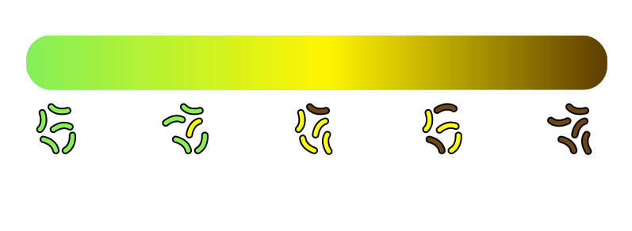
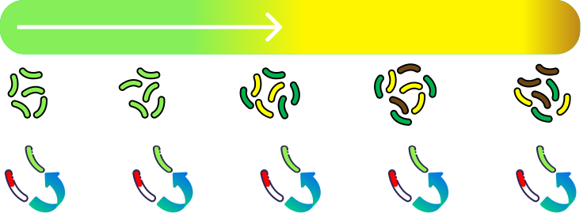

Microbial Stem Cell Technology (MiST)
Summary
The goal
Microbes in bioreactors can convert solar energy stored in plant material into pharmaceuticals, food ingridients, biofuels, and other products that are useful for human society. In order for industrial-scale bioreactors to be competitive with established industries that make similar products, their yields must be substantially increased. The novel technology of AsimicA is a widely applicable genetic platform that is predicted to increase bioreactor yields by several fold, and could bring transformational advancements to bioprocessing industries.
The problem
In the highest yielding microbial strains, biochemical pathways are rearranged to promote product synthesis at the expense of normal cell metabolism. Higher production is inherently associated with slower cell growth. Moreover, accumulated products are often toxic to the cells that produce them, which further suppresses growth, increases stress, and leads to elevated rates of mutation. Under such conditions, it is inevitable that non-productive “cheater mutants” arise spontaneously in the population. These cells, which no longer suffer the metabolic strain of product synthesis, divide rapidly and overpopulate the culture, spoiling production.
The innovation
We are addressing this fundamental problem in bioproduction with a genetic system that we call MiST (Microbial Stem cell Technology). We have already validated the underlying genetic circuitry for MiST (Mushnikov et al. “Inducible asymmetric cell division and cell differentiation in a bacterium” Nature Chemical Biology, August 2019) and shown that it is possible to populate a bioreactor vessel with a small population of bacterial “stem cells”. In this system, stem cells always divide asymmetrically into one stem cell and another that differentiates into a “factory cell” that begins product synthesis. The continual generation of new factory cells has a strong effect on the culture’s population structure, allowing it to maintain a sub-population of young, rapidly dividing cells. Our models predict that several-fold more factory cells will be produced in MiST cultures than in conventional cultures, and that production time will be extended as the rapidly dividing cells in MiST cultures compete against the proliferation of cheater mutants.
Notably, the models predict that the greatest increases in factory cell number occur when the growth rate of older factory cells is low, and that under such circumstances MiST culturing methods could increase yields by more than ten-fold. MiST will be particularly advantageous for producing highly cytotoxic molecules that are difficult to produce in large quantities using conventional bioprocessing methods. Achieving multi-fold improvement in product yields would be a transformational advancement for the bioprocessing industry.
Conventional
MiST
Our Mathematical Models predict a multi-fold increase in total number of Factory Cells in MiST cultures, comparing to conventional.
Hence, the yield of products is also significantly increased.